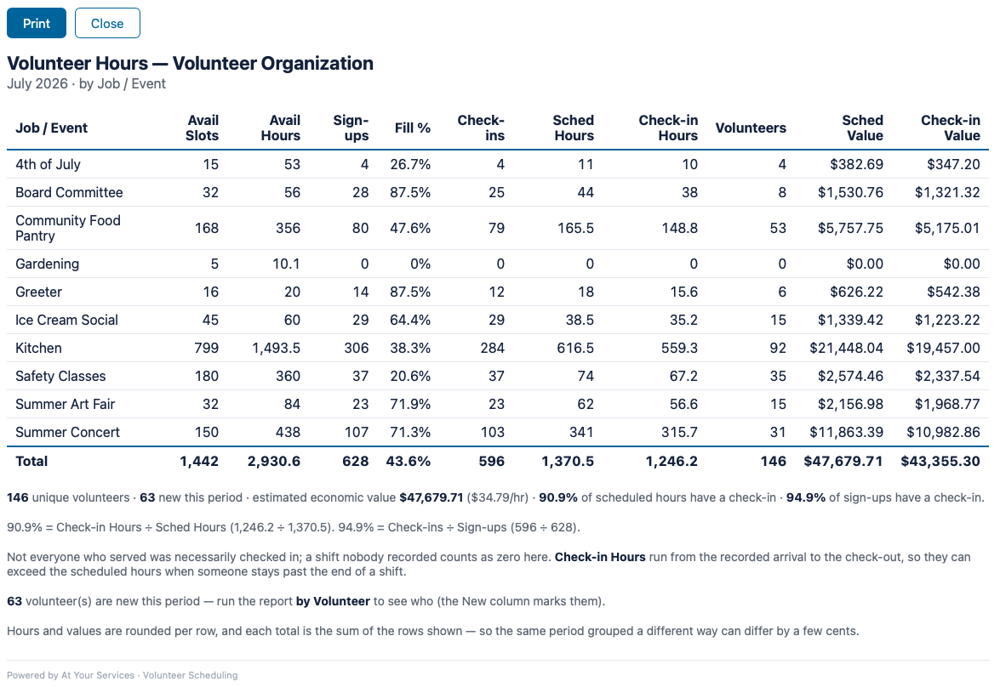

Volunteer Scheduling for Museums & Historical Societies
Docents, greeters, gift-shop and tour volunteers on the days you are open — and the hours your board and grant applications ask for.
Stop filling the calendar by phone and email. Set up your open days once; volunteers claim the shifts that suit them from any phone, and you can see weeks ahead which days are still short.
Try the live demo Book a 15-minute call
Your open days, set up once
- Recurring shifts — daily, weekday, day-of-week or monthly patterns, open-ended or with an end date, each with the number of people it needs.
- Seasons and special events — a dated multi-day event (a festival weekend, a holiday open house) can come back on next season's calendar, and a finished program leaves the calendar with its history kept.
- Several sites or areas — a Job for each building, gallery or role, private where it should be, and each Supervisor runs their own. The word "Job" can be your own: Site, Gallery, Department.
- Exceptions without rebuilding the plan — lock a fully staffed date, or call off a day for weather with your reason emailed to everyone on it.
Easy for volunteers of any age
- Sign in with an emailed link — no password to remember and no app to install.
- A reminder about a day before each shift, with an add-to-calendar file and a "Can't make it?" link that drops the shift without signing in, so the place opens up for someone else.
- Families and guests — one account can cover a couple or a family, and a volunteer can sign up with guests ("+2") who hold their own places.
- Someone who would rather phone — staff can sign them up for a future shift themselves.
At the front desk
- Check-in — from a front-desk tablet, a volunteer's own phone, or the staff roster, to record who actually came.
- Walk-ins — add a volunteer who turned up without signing up, on the day.
- Printable check-in sheets — the day's roster with write-in lines, for a desk without a tablet.
The hours your board and funders ask for
Monthly, quarterly and annual reports of hours scheduled and checked in, unique and new volunteers, the estimated economic value of that time, and the share of each shift you filled — so you know where to recruit. Print it, or export it to CSV.


Bring your volunteer list with you
Import your volunteers from a spreadsheet saved as CSV. Every row is checked first, and nothing is created until you confirm.
What it costs
There is no software-license cost and no ads. We set up and host it for you at pass-through infrastructure cost — typically about $10–40 a month — with setup currently free for nonprofits, or you can run it yourself. Free hosted options may be available for qualifying small organizations — just ask. Hosting & pricing in full.
See it with sample data, or talk it through for 15 minutes.
Try the live demo Book a 15-Minute Consultation Product overview